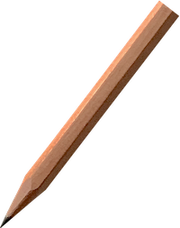

Drawing an ellipse

- Given are the width and height of the ellipse.
- The length of the string (red) shall be equal to the width, i.e. the major axis (2*a).
- The foci (F), at the equal distance (c) from the center, are found when the pen reaches the half height.
- The eccentricity of the ellipse is c/a.
Wikipedia link